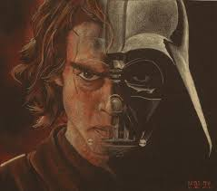

|
|
|
 |
| Anakin Skywalker ki később Darth Vaderré válik aki a film sorozat leg ikonikusabb és legfontosabb szereplője | >
A Sith-ek bosszúja a Klónháborúk végén játszódik,
amikor a Galaktikus Köztársaság már a szétesés szélén áll.
Anakin Skywalker hőssé vált a háborúban,
de egyre jobban gyötrik sötét látomásai felesége,
Padmé haláláról.
Eközben Palpatine kancellár egyre nagyobb befolyást gyakorol rá,
és titokban a Sötét Oldal felé vezeti.
Obi-Wan Kenobi közben elindul,
hogy legyőzze a lázadók vezetőjét, Grievous tábornokot,
míg Anakin a Coruscanton marad.
Palpatine felfedi előtte valódi kilétét: ő Darth Sidious,
a Sith nagyúr.
Anakin hogy megmentse Padmét végül elárulja a Jediket
és a Sithek tanítványává válik, Darth Vaderré.
A Jedi Rend elpusztul, a Köztársaság Birodalommá válik,
és Anakin végzetesen szembekerül mesterével, Obi-Wannal.
A történet tragikus véget ér,
de egyben megágyaz a klasszikus trilógia kezdetének:
Luke és Leia titokban születnek meg,
és a remény szikrája életben marad.